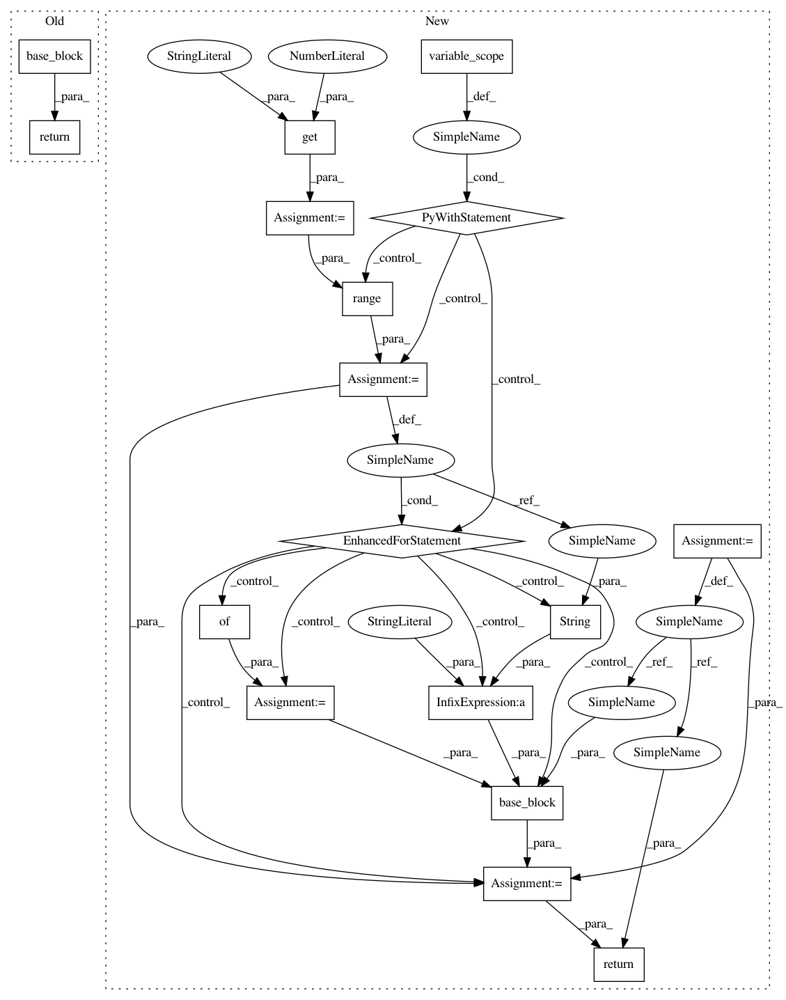

cdd8a8d686272217f7d9a7a0de34262192696b28,batchflow/models/tf/encoder_decoder.py,VariationalAutoEncoder,embedding,#Any#Any#Any#,367
Before Change
base_block = kwargs.get("base")
mean = base_block(inputs, name="mean", **kwargs)
std = base_block(inputs, name="std", **kwargs)
eps = tf.random.normal(shape=tf.shape(mean))
return mean + eps*std
After Change
-------
tf.Tensor
steps = kwargs.get("num_stages", 1)
base_block = kwargs.get("base")
x = inputs
with tf.variable_scope(name):
for i in range(steps):
args = {**kwargs, **unpack_args(kwargs, i, steps)} // enforce priority of keys
mean = base_block(x, name="mean-"+str(i), **args)
std = base_block(x, name="std-"+str(i), **args)
eps = tf.random.normal(shape=tf.shape(mean), name="eps-"+str(i))
x = mean + eps*std
return x
In pattern: SUPERPATTERN
Frequency: 3
Non-data size: 17
Instances
Project Name: analysiscenter/batchflow
Commit Name: cdd8a8d686272217f7d9a7a0de34262192696b28
Time: 2019-07-04
Author: Tsimfer.SA@gazprom-neft.ru
File Name: batchflow/models/tf/encoder_decoder.py
Class Name: VariationalAutoEncoder
Method Name: embedding
Project Name: analysiscenter/batchflow
Commit Name: cdd8a8d686272217f7d9a7a0de34262192696b28
Time: 2019-07-04
Author: Tsimfer.SA@gazprom-neft.ru
File Name: batchflow/models/tf/encoder_decoder.py
Class Name: VariationalAutoEncoder
Method Name: embedding
Project Name: analysiscenter/batchflow
Commit Name: f7a225c536b07142d955d24f77db2375858d0c65
Time: 2019-07-16
Author: Tsimfer.SA@gazprom-neft.ru
File Name: batchflow/models/tf/encoder_decoder.py
Class Name: EncoderDecoder
Method Name: embedding
Project Name: analysiscenter/batchflow
Commit Name: 263908a511c8a9eccf5447621809c8bb9856ad55
Time: 2019-07-02
Author: Tsimfer.SA@gazprom-neft.ru
File Name: batchflow/models/tf/encoder_decoder.py
Class Name: EncoderDecoder
Method Name: embedding